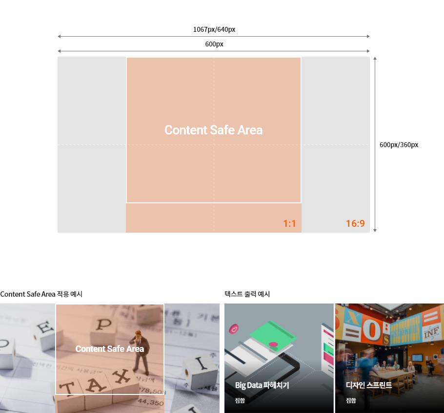

멀티캠퍼스 상품 대표 이미지 스타일 가이드는 멀티캠퍼스의 다양한 플랫폼에서 활용되는 상품의 대표 이미지를
상품에 적합한 시각 정보를 전달하여 사용자에게 긍정적이고, 심미적 경험을 제공하고자 작성되었으며,
이러한 대표 이미지는 상품의 가치를 더욱 높여 줄 수 있습니다.
본 가이드는 상품 대표 이미지의 품질 상향을 위한 제작 규정 및 스타일 가이드를 제공하고,
PC, 모바일 및 다양한 디바이스에서의 활용을 고려하여 실 제작 사례와 함께 설명합니다.
아래의 파일명, 이미지 사이즈, 용량, 포맷 등을 준수하여 제작합니다.
본 가이드 문서에 따라 제작되는 콘텐츠 대표 이미지는 멀티캠퍼스 LC를 비롯한 다양한 플랫폼, 디바이스, 화면에 활용 가능하도록 제작합니다.
대표 이미지는 지정된 사이즈와 비율로 제작하되, 다양한 출력 비율을 고려하여 제작합니다.
핵심 이미지는 가시성 극대화를 위해 아래의 Content Safe Area 내에 위치하고,
이미지 하단에 텍스트가 출력되는 경우를 고려하여 상단-중심까지만 위치하도록 합니다.

출력의 대표적인 예시 화면을 보여줍니다. 이 외 다양한 비율은 Publishing 작업으로 대응합니다.